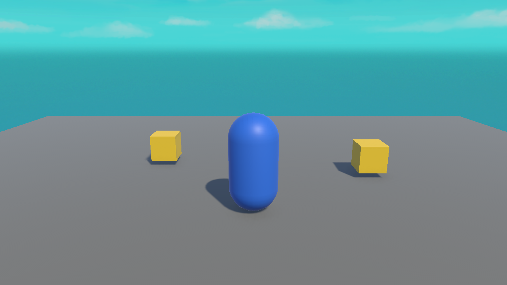

🎥 Lesson 4.3: Making the Camera Follow
A moving player is no fun if it slides off screen. Let's write a short script that keeps the camera glued behind the player at a fixed offset — the classic follow-cam.
🎯 Learning Objectives
- Reference another object from a script with a
public Transform - Keep the camera at a fixed offset from the player
- Understand why camera code belongs in
LateUpdate() - Assign a target by dragging it into a public slot in the Inspector
Estimated Time: 30 minutes
In This Lesson
The Follow-Cam Idea
A follow camera keeps a constant offset from the player: say, 7 units back and 5 units up, always looking at them. Wherever the player goes, the camera trails along like it's on an invisible pole. Here's roughly the framing we're after:

The Follow Script
Create a script CameraFollow and attach it to the Main Camera:
using UnityEngine;
public class CameraFollow : MonoBehaviour
{
public Transform target; // the player to follow
public Vector3 offset = new Vector3(0f, 5f, -7f); // behind & above
void LateUpdate()
{
if (target == null) return; // safety: no target set
// sit at the target's position plus our offset
transform.position = target.position + offset;
// look toward the target
transform.LookAt(target);
}
}📖 Definition
Transform reference: a public Transform target is a slot that points at another object's Transform. Your script can then read target.position to know where that object is.
Assigning the Target
The script has a target slot but doesn't know which object to follow until you tell it:
- Select the Main Camera — the Inspector shows the CameraFollow component with an empty Target slot.
- Drag the Player from the Hierarchy into that Target slot.
- Press Play and move — the camera now follows!
⚠️ NullReferenceException on the camera?
That means the Target slot is still empty. This is the classic "forgot to drag the object in" bug from Lesson 3.4. Drag the Player into the Target slot and it's fixed. (Our if (target == null) return; line guards against a crash meanwhile.)
Why LateUpdate?
We put the camera code in LateUpdate() instead of Update(). Here's why it matters:
Update()runs for all scripts each frame — including the one that moves the player.LateUpdate()runs after everyUpdate()has finished.- So by the time the camera moves in LateUpdate, the player has already moved this frame. The camera follows the player's final position — smooth, no jitter.
player moves] --> B[Update:
everything else] --> C[LateUpdate:
camera follows final position]
💡 Rule of thumb: anything that should react to where objects ended up this frame — cameras especially — goes in LateUpdate().
Hands-on Exercise
🏋️ Exercise: Chase cam
- Attach
CameraFollowto the Main Camera. - Drag the Player into the Target slot.
- Press Play and drive around — confirm the camera trails you.
- Tweak the Offset (e.g. Y = 8, Z = -10 for a higher, further view). Find your favourite.
💡 The camera snaps oddly or spins
Make sure the offset keeps the camera behind and above (negative Z, positive Y). LookAt(target) then aims it correctly. If it's upside down, your offset Y is probably negative.
✅ Bonus: smooth follow
// Instead of snapping, ease toward the target position:
transform.position = Vector3.Lerp(transform.position,
target.position + offset,
5f * Time.deltaTime);🎯 Quick Quiz
Question 1: How do you tell the CameraFollow script which object to follow?
Question 2: Why put follow-camera code in LateUpdate()?
Summary
🎉 Key Takeaways
- A
public Transform targetslot lets a script reference another object; assign it by dragging in the Inspector. - Position the camera at
target.position + offsetandLookAt(target). - Camera-follow code belongs in
LateUpdate()so it uses the player's final position. - An empty target slot causes a NullReferenceException — always assign it.
🚀 What's Next?
Your player moves and the camera follows. But it walks through walls and floats free of gravity. Module 5 brings in physics — Rigidbodies, colliders, and real pickups.
🎉 Module 4 complete!
A controllable player with a following camera — that's the core of countless games.